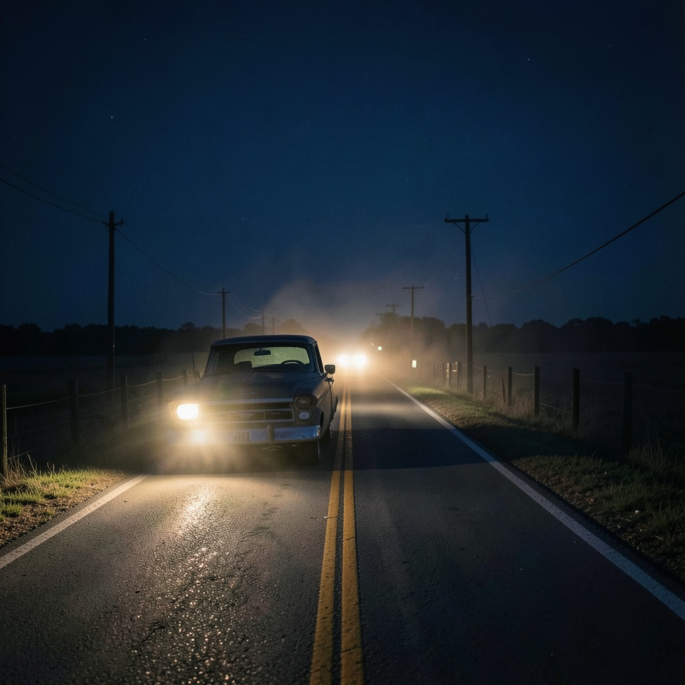

Inspired by roots-forward songwriting, electric edge, and wide-open road energy.
What is ready
A working collection with the real audio and artwork in place.
The song cards below now point to the finished cover images and playable audio files. The lyric and description files are still linked, so the page works both as a public listening site and as a clear record of how each track was built.
Release status
- 10 total songs across one cohesive roots project
- 7 vocal songs and 3 instrumentals
- Music in Suno, cover art in ChatGPT Images or Adobe Firefly
- Ready for GitHub Pages once the repo is pushed
Song Collection
Ten songs built around memory, grit, faith, and backroad motion.
The titles and concepts below now connect directly to the writing files in
assets/lyrics/ and the prompt packets in assets/descriptions/.
This page has shifted from concept site to listening site, with real assets dropped into
the project and ready for publishing.

Dust on the Dashboard
A highway-worn opener about memory, mileage, and the kind of love that never quite leaves the cab of the truck.
Music: Suno · Cover art: ChatGPT Images
Mood: reflective, highway-worn, cinematic

River Town Revival
A loose, gritty instrumental built for slide guitar, organ haze, and a slow groove that sounds like neon reflecting off muddy water.
Music: Suno · Cover art: Adobe Firefly
Mood: humid, nocturnal, neon-soaked

Flint & Honey
A rugged love song with equal parts tenderness and bite, aimed at the intersection of Appalachian storytelling and southern blues swagger.
Music: Suno · Cover art: ChatGPT Images
Mood: romantic, rugged, rootsy

Cedar Creek Gospel
A backwoods redemption song with a steady stomp, weathered harmonies, and lyrics that feel half confession and half prayer.
Music: Suno · Cover art: Adobe Firefly
Mood: spiritual, stomping, creekside

County Line After Midnight
A darker instrumental cut with reverb-heavy guitar leads, low-end rumble, and a roaming backroad mood.
Music: Suno · Cover art: ChatGPT Images
Mood: tense, lonely, midnight road

Old Blue Flame
A blues-rock burner about stubborn hope, bad habits, and the spark that survives every hard season.
Music: Suno · Cover art: Adobe Firefly
Mood: defiant, smoky, riff-driven

Broken Wheel Hallelujah
A rowdy Red Dirt anthem about scraping through hard luck with humor, grit, and a chorus built to be shouted back from the crowd.
Music: Suno · Cover art: ChatGPT Images
Mood: rowdy, backroad, singalong

Red Clay Interlude
A shorter instrumental palate cleanser with fingerpicked textures, brushed percussion, and a warm sunset tone.
Music: Suno · Cover art: Adobe Firefly
Mood: warm, spacious, sunset-breather

Lanterns in the Wind
A reflective late-album song with homesick imagery, patient acoustic framing, and a melody meant to sit heavy in the chest.
Music: Suno · Cover art: ChatGPT Images
Mood: homesick, gentle, night-lit
.jpg)
Backroads Don’t Forget
A closing track centered on place, memory, and the way a hometown can keep echoing through every version of who you become.
Music: Suno · Cover art: Adobe Firefly
Mood: nostalgic, expansive, closing-statement
Workflow
A practical path from placeholder to public release.
Listen through the sequence
Check the pacing from the opener through the closer and decide whether any alternate export should replace a current main-track pick.
Tighten the final visuals
Swap any cover image that feels weaker than the rest, especially if you want a more consistent aspect ratio or stronger color story.
Push the repo to GitHub
Add the project to a GitHub repository with the finished assets so the static site and media all live together.
Publish to GitHub Pages
Publish this folder as a shareable GitHub Pages site once you are happy with the sequencing and artwork choices.